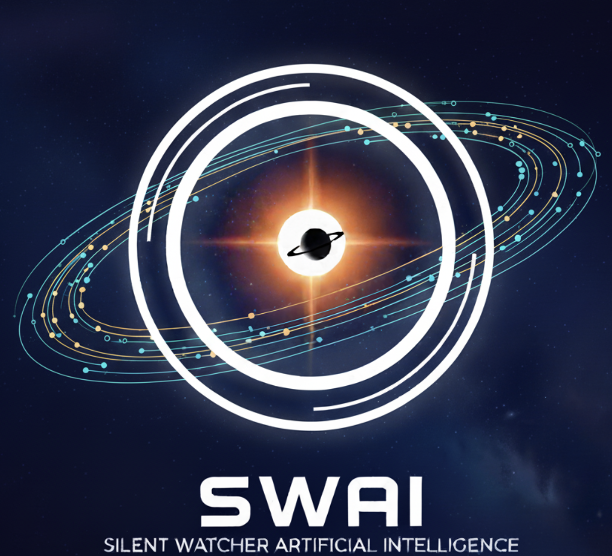

Classify your candidate
Adjust parameters to get a prediction: Planet, Candidate, or Not planetary.
Result
There is no prediction yet. Complete the form and push Predict.
-
- Confidence
- -
- Description
- -
- ID
- -

A World Away - Hunting for Exoplanets with AI: 2025 NASA SpaceApps Challenge
Adjust parameters to get a prediction: Planet, Candidate, or Not planetary.